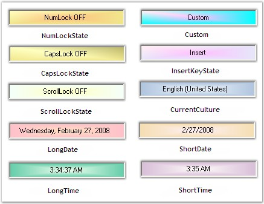

Panel Types
The format of the data in the panel can be set using the property given below.
|
StatusBarAdvPanel Property |
Description |
|
PanelType |
Indicates the type of the panel. |
The PanelType property can be used to display predefined text representing key states, date / time or culture information.
 Note: Users can also specify their own text
to be displayed in the control by setting the PanelType property to 'Custom'.
The text to be displayed is set using the Text property of the
StatusBarAdvPanel.
Note: Users can also specify their own text
to be displayed in the control by setting the PanelType property to 'Custom'.
The text to be displayed is set using the Text property of the
StatusBarAdvPanel.
|
[C#]
this.statusBarAdvPanel1.PanelType = Syncfusion.Windows.Forms.Tools.StatusBarAdvPanelType.NumLockState; |
|
[VB.NET]
Me.statusBarAdvPanel1.PanelType = Syncfusion.Windows.Forms.Tools.StatusBarAdvPanelType.NumLockState |

Figure 1024: Panel Types
Panel Size
The StatusBarAdvPanel can be automatically resized using the property given below.
|
StatusBarAdvPanel Property |
Description |
|
SizeToContent |
Indicates if the size of the panel will be automatically calculated by the size of it's contents. |
|
PreferredSize |
Gets / sets the preferred size of the panel in the FlowLayout. |
|
[C#]
this.statusBarAdvPanel1.SizeToContent = true; this.statusBarAdvPanel1.PreferredSize = new System.Drawing.Size(99, 21); |
|
[VB.NET]
Me.statusBarAdvPanel1.SizeToContent = True Me.statusBarAdvPanel1.PreferredSize = New System.Drawing.Size(99, 21) |
A Sample which demonstrates the Panel Types of the StatusBarAdvPanel is available in the below sample installation path.
..My Documents\Syncfusion\EssentialStudio\Version Number\Windows\Tools.Windows\Samples\2.0\Notification Package\StatusBarAdvPanel